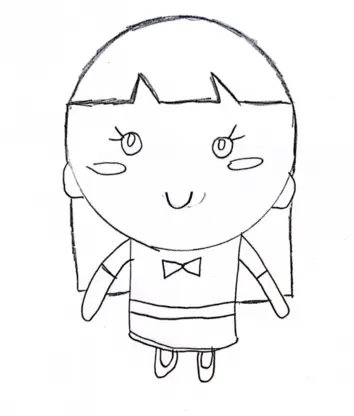
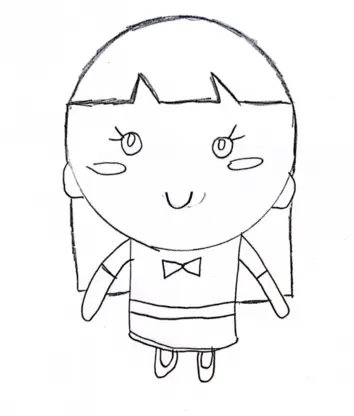
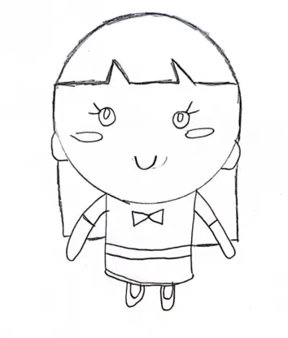

Temaopgave
Et UML-aktivititsdiagram hjælper med at visualisere en bestemt use case på et mere detaljeret niveau. Det er et adfærdsdiagram, der illustrerer flowet af aktiviteter gennem et system.
I mit aktivititsdiagram pitchede jeg min idė om hvordan mit spil skulle fungere, og hvad mit spil skulle handle om.
Jeg ønskede, at mit spil skulle være minimalistisk og børnevenligt. Mit endelige resultat af en idé om et emne var en picnic, hvor de gode ting var mad, og de dårlige ting var insekter. Der er en kurv i bunden - og brugeren skal klikke på insekterne, så de ikke ødelægger maden. Den stil, jeg valgte til mit spil, var et blandt af kawaii 2 og 4 - da denne stil lægger vægt på figurer med et barnligt udseende og lyse farver.

Jeg skitserede alle mine figurer ud fra desk research af min valgte stil, og pitchede en idé om, hvordan min startside og spillets baggrund skulle se ud. Det hjælpede mig med at komme videre, da jeg begyndte at tegne i Adobe Illustrator.
Jeg tegnede alle de elementer, jeg ville bruge i mit spil, i Adobe Illustrator.
UI-elementerne er de ting, der gør det muligt for spillerne at interagere med spillets mekanik, indstillinger og funktioner.
Spilelementer er de ting, der er en del af spillet, og som spilleren leger med. Jeg valgte 4 dårlige ting og 5 gode ting i mit spil.

Ud fra mine element tegninger designerede jeg en startskærm, baggrundsskærm, level complete skærm og game over skærm.